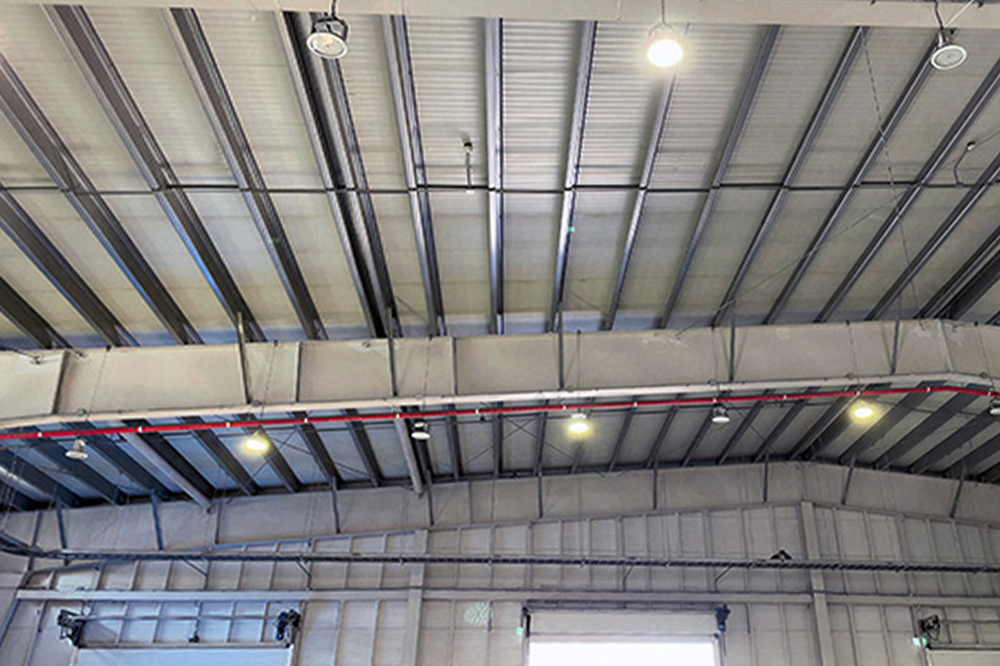

비둘기 퇴치
둥지와 배설물로 건물에 피해를 주는
매년 봄과 가을에는 비둘기들의 산란과 둥지 활동이 활발해집니다. 이 과정에서 아파트나 창고에 들어와 배설물과 악취를 만들고 시설물에 피해를 줍니다.

비둘기 퇴치 작업 대상
비둘기로 피해를 입은 모든 건물 및 시설
건물
시설물
공장
관공서
사무실
창고
작업 환경과 오염 상태를 확인한 뒤 시설에 맞는 방식으로 진행합니다.
비둘기 퇴치작업 갤러리
작업 전과 후를 확인할 수 있습니다
비둘기 퇴치 작업과정이 담긴 동영상
사진과 영상 갤러리에서 더 많은 작업 과정을 확인할 수 있습니다.